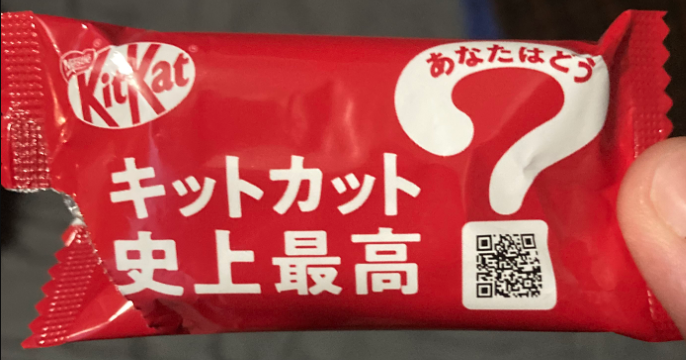

Normal KitKat
I don't have an actual normal kitkat with me at this moment, but I can still tell you it's pretty alright. It's the baseline for all the other kitkats, so it's not bad, but not mind blowing either.

Mystery KitKat
This was the first kitkat I tried, and I was mostly confused. I guess that's fitting. I shared this one with my girlfriend, and we both agreed that we had no clue what it was. It had som purplish coloring on the inside, and it was a bit fruity. I think it may have been grape.

Biscuit KitKat
I'm writing this a while after I ate it, but I remember it being pretty good. It genuinely tasted 50% KitKat and 50% like one of those sweet biscuit cookies. I'd eat it again for sure.

Salt Lemon KitKat
I'm writing this a while after I ate it, but I vividly remember the flavor of this one. It was like taking a bite of a lemon dessert. The flavor was adjacent to the Key Lime KitKat, one of my all time favorites, but it was a bit more sour. This one is really good, and I'd highly recommend it.

Chocolate Orange KitKat
This kitkat tastes exactly like a chocolate orange. That means it tastes good and I would never turn it down, but like, I would never go out of my way to get it because if I want to taste chocolate orange, I'll just get a chocolate orange.